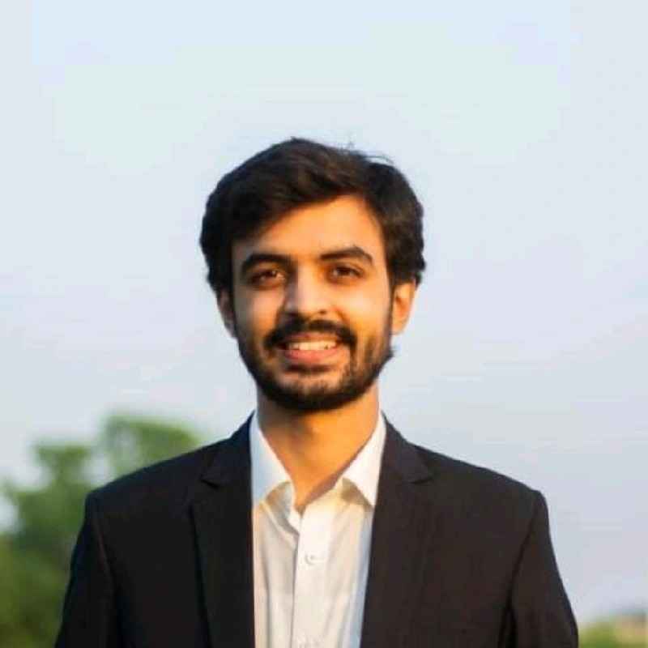

I am a Ph.D. student in Computer Science at Purdue University, advised by Prof. Z. Berkay Celik in the PurSec Lab.
My research sits at the intersection of AI agents and systems security: I build LLM-agent systems for autonomous penetration testing, study where existing agentic frameworks break down, and evaluate how well commercial endpoint detection and response (EDR) products catch agent-driven attacks.
Before Purdue, I completed my M.S. at Virginia Tech, advised by Prof. Murat Kantarcioglu. I received my B.S. from LUMS, and worked with Prof. Zafar Ayyub Qazi on datastores for edge networks. I also had the opportunity to work with Prof. Katerina Argyraki in the Network Architecture Lab (NAL) at EPFL as part of Summer@EPFL 2024, measuring CDN edge caching.
News
- Aug 2026Started my Ph.D. at Purdue University in the PurSec Lab.
- Dec 2025Served on the USENIX Security '26 Artifact Evaluation Committee.
- Sep 2025Received the Best Student Paper Award at ACM SIGCOMM 2025!
- Sep 2025Attended the CMD-IT/ACM Richard Tapia Conference as a Tapia Scholar.
- Aug 2025Served on the ACM SIGCOMM 2025 Artifact Evaluation Committee.
Publications
-
PreprintarXiv, 2026
@misc{rehman2026ruleautopilot, title = {RuleAutoPilot: Synthesizing Deployable Suricata Rules from Network Traffic}, author = {Ur Rehman, Mughees and Piplai, Aritran and Kantarcioglu, Murat}, year = {2026}, eprint = {2609.16231}, archivePrefix = {arXiv}, primaryClass = {cs.CR} } -
MSR '2623rd IEEE/ACM International Conference on Mining Software Repositories, 2026
@inproceedings{muzammil2026hotspots, title = {Source Code Hotspots: A Diagnostic Method for Quality Issues}, author = {Muzammil, Saleha and Ur Rehman, Mughees and Kotti, Zoe and Spinellis, Diomidis}, booktitle = {Proceedings of the 23rd IEEE/ACM International Conference on Mining Software Repositories (MSR)}, year = {2026}, eprint = {2602.13170}, archivePrefix = {arXiv} } -
SIGCOMM '25Proceedings of the ACM SIGCOMM 2025 Conference, 2025 Best Student Paper Award
@inproceedings{abdullah2025edgecaching, title = {Edge Caching as Differentiation}, author = {Abdullah, Muhammad and Ur Rehman, Mughees and Nikolopoulos, Pavlos and Argyraki, Katerina}, booktitle = {Proceedings of the ACM SIGCOMM 2025 Conference}, year = {2025}, doi = {10.1145/3718958.3754350} }
Service
- Artifact Evaluation Committee: ACM CoNEXT 2026, USENIX Security 2026, ACM SIGCOMM 2025
- Reviewer: ACM Computing Surveys (CSUR) 2025
Awards & Honors
- Best Student Paper Award, ACM SIGCOMM 2025 (2025)
- Tapia Conference Scholarship, CMD-IT/ACM Richard Tapia Celebration of Diversity in Computing (2025)
- Cyber Innovation Scholar, Commonwealth Cyber Initiative ($3,000 travel & development grant) (2024 – 2026)
- Summer@EPFL Research Internship, one of ~80 students selected worldwide (2024)
- LUMS Merit Scholarship, top 15 students in the cohort, and Dean's Honors List (2020 – 2024)